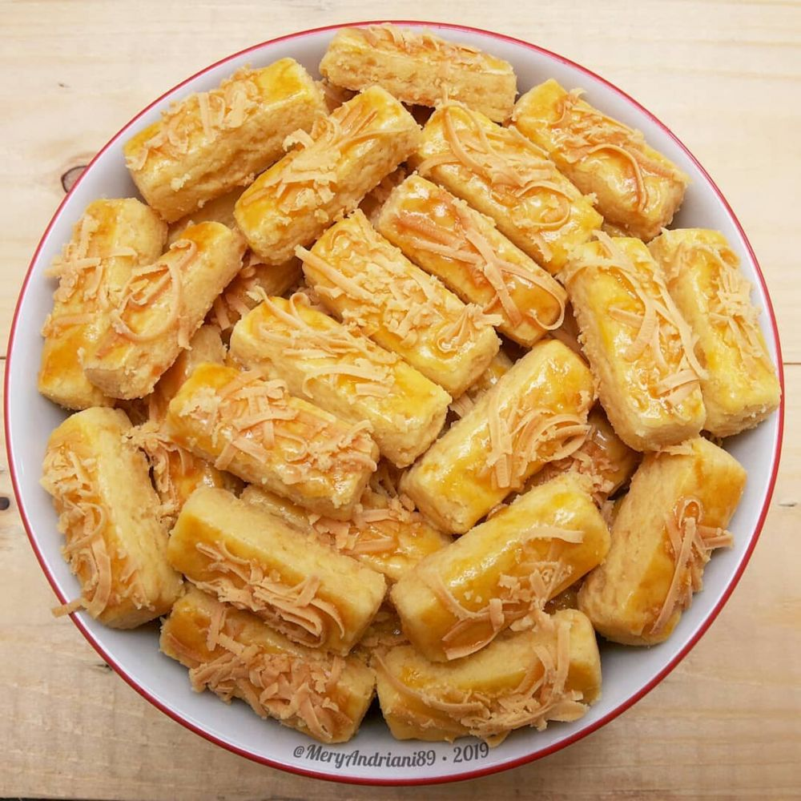

Cake tiramisu merupakan hidangan penutup klasik Italia yang terkenal dengan kelezatannya yang tak terlupakan.
Perpaduan rasa kopi yang kaya dan pahit, dipadukan dengan krim mascarpone yang lembut dan manis.
Caramel
Rayakan momen spesial bersama orang terkasih dengan Cake Caramel yang menggoda selera.
cake ini dibuat dengan bahan-bahan berkualitas tinggi dan tanpa bahan pengawet, sehingga aman dinikmati oleh semua orang.
Greentea
Cake ini memiliki rasa teh hijau yang autentik dan aroma yang harum menggoda.
Teksturnya yang lembut dan moist berpadu sempurna dengan frosting green tea yang creamy, menghasilkan sensasi rasa yang tak terlupakan.
Cup Cake
Cupcake kami dibuat dengan bahan-bahan berkualitas tinggi dan segar,menghasilkan rasa yang lezat dan tekstur yang lembut.
Cocok untuk dinikmati sebagai camilan, hidangan penutup,atau untuk memeriahkan berbagai acara spesial.
Lidah Kucing
Kue kering lidah kucing adalah salah satu kue kering favorit banyak orang, terutama saat Lebaran.
Bentuknya yang panjang dan tipis menyerupai lidah kucing, dengan teksturnya yang renyah dan rasa manis yang pas.

Kastengel
Kastengel, si mungil nan gurih ini selalu menjadi primadona di momen spesial, terutama saat Lebaran.
Perpaduan rasa gurih keju dan teksturnya yang renyah membuat kastengel disukai semua kalangan.
Bunga Dahlia
Kue kering bunga dahlia adalah salah satu kue kering klasik yang selalu digemari banyak orang, terutama saat momen lebaran.
Dinamakan bunga dahlia karena bentuknya yang menyerupai bunga dahlia yang mekar indah.
Nastar
Nastar merupakan salah satu kue kering favorit yang selalu hadir di momen spesial, terutama Hari Raya Idul Fitri.
Perpaduan rasa manis nanas yang legit dengan tekstur kue yang renyah dan lumer di mulut menjadikannya camilan yang tak terlupakan.